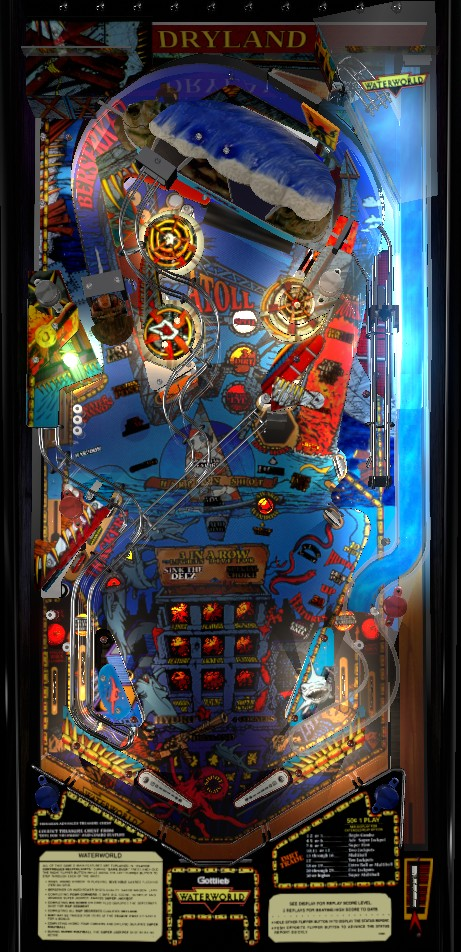

Waterworld is a surprisingly nonlinear game, with mechanics that affect each other in both intended and unintended ways. Shoot the Dive Hole scoop to start the flashing mode, and light it; solidly lit modes can be replayed at any time. The simplest routes to a big score are to either avoid making 3-in-a-row, focusing only on Feature modes and aiming for the 500,000,000 bonus that comes from completing all 12, or to only make 3-in-a-rows to repeatedly play Sink the Deez and its corresponding multiball. Bumpers, slings, and right orbit shots rotate which mode is selected on the 3x3 panel near the flippers.
The below picture of Waterworld's playfield was taken from the VPX recreation by Aubrel, Goldchicco, and 32assassin.

At the start of your turn, a plunged ball will feed the right flipper. Shoot the left orbit or the Dive hole in the middle-right to score a Skill Shot. The first made Skill Shot in a game instantly starts standard multiball. Any further Skill Shots made in the game score one Jackpot.
The 3x3 grid of orange squares between the slingshots is the game's Feature Window, which governs most of the game's scoring opportunities. At any time during non-mode, single-ball play, one of the squares will be flashing. If the Dive Hole is lit for Award Window, shoot the Dive Hole to start the flashing square''s feature and light that panel solidly. If the Dive Hole is not lit, any switch in the game will light it as long as Sink the Deez has not been played yet; if Sink the Deez has been played, you must shoot either right orbit specifically in order to relight Award Window, and Award Window will only stay lit for a few seconds. The flashing square in the grid can be moved by shooting the right orbit, either slingshot, or any pop bumper. The flashing square moves around the grid in reading order- top row left to right, then middle row left to right, then bottom row left to right- then goes back to the center square one more time before returning to the top left corner. Unlike most games with a mode system, it is possible to replay or re-earn an award associated with a lit panel of the grid; this can be done an infinite number of times if you want to grind one specific award without making other progress in the game.
The top left panel gives 5 Dirt. Dirt is Waterworld's in-game currency and is described in more detail later.
The top right panel gives Big Score. Earning Big Score instantly awards 30,000,000 points and starts 3 hurry-ups at once: Map Segment on the left orbit, 3 Dirt at the center shot, and 50,000,000 points at the hurry-up shot in the lower right. These awards time out in the order listed as well, so you have the least time to collect Map Segment and the most time to collect the 50,000,000.
The center panel gives Jackpot. The base Jackpot value is 20,000,000 points at the start of each game; completing the Trimaran drop target 2-bank in the middle left by hitting the two targets separately adds 5,000,000 to the Jackpot value, up to a maximum of at least 105,000,000. The Jackpot value is carried from ball to ball for each player.
The bottom left panel gives Hurry-up. For a few seconds, one random award is lit at the hurry-up shot in the lower right. The lit award is selected randomly from Extra Ball, 50,000,000 points, Jackpot, or 10 Dirt.
The bottom right panel gives Advance Super Jackpot. The base Super Jackpot value is 200,000,000 points at the start of each game; advancing the Super Jackpot adds 50,000,000 to it, up to a maximum of 600,000,000 points. Super Jackpot can be collected from standard Multiball, Deacon Battle Multiball, the Hellfire Gunboat mode, or Super Multiball.
All other panels- top middle, middle left, middle right, and bottom middle- award Player's Choice feature. This is explained in detail later in the section.
Lighting any 3-in-a-row on the 3x3 grid lights the Dive Hole for either Sink the Deez (for odd-numbered completions) or Special Choice (for even-numbered completions). After playing either Sink the Deez or Special Choice, all solidly panels in the grid will be reset, with one exception: if Dryland is lit at the left orbit, the grid will not be reset, and hitting any switch in the game will cause the Dive Hole to be lit for the next 3-in-a-row award.
Feature (mode) paths
Waterworld features 2 paths with 6 modes each. Whenever you collect a panel on the 3x3 grid labelled Feature, you get to choose whether you want to play the next mode in the left path or the next mode in the right path. Modes within each path are always played in the same order. If you have completed exactly one path, that option will be labelled "Completed" and is unselectable. If you complete both paths, you score an instant 500,000,000 points and both paths are reset. One viable strategy on Waterworld is to play as many of these modes as possible while avoiding completing a 3-in-a-row on the grid, so that Award Window is always lit easily; doing this precisely can get you the 500,000,000 award in just a couple of minutes.
Left path
Sink the Deez
This is the setup round for Deacon Battle Multiball. Sink the Deez is started as either the award for completing a 1st, 3rd, etc., 3-in-a-row on the grid, or as the first mode on the right path of the Feature order. During Sink the Deez, the center shot is available to lock balls. When a ball is locked, a new ball is kicked out and plunged (with no skill shot chance). If one ball is locked and the 2nd ball is drained, the locked ball is kicked out and the chance at Deacon Battle Multiball is lost. If two balls are locked and the 3rd is drained, the locks are kicked out and Deacon Battle Multiball is played as a 2-ball round. If 3 balls are locked, multiball will start as a 4-ball round as soon as the 4th ball hits any switch; supposedly, if the first switch triggered by that 4th ball is a Deez lock, a Jackpot is scored, but I have not been able to get this to happen.
During Deacon Battle Multiball, all 6 major shots will be lit for regular Jackpots (both orbits, center shot, Dive Hole, Trimaran targets, and lower right loop). After collecting all 6 Jackpots, Super Jackpot is lit at the kicking target near the entrance of the right orbit (the Super Jackpot insert makes it look like the Super Jackpot is earned at the right orbit, but it's not). Collecting the Super Jackpot relights all normal Jackpots and resets the sequence. This can be looped repeatedly until single ball play resumes.
Special Choice
Even-numbered 3-in-a-rows give you a choice between Super Hint or Two Jackpots. These options never change regardless of the game state or the number of times Special Choice is played.
During timed modes such as Dive for Treasure and Hellfire Gunboat, when time has almost run out, the center shot will begin to flash red. Making the center shot when flashing red awards Deacon's Eye, which restarts the timer for that mode. Deacon's Eye can only be used once per player per game.
Complete the 3-bank of targets in the lower left to cause a moving light to move between the three targets. Hit the target with the moving light to qualify an award. If the moving light is on red, a Map piece will be lit at the left orbit. If the moving light is yellow, the center shot is lit for 3 Dirt. If the moving light is white, the right orbit is lit for Advance Super Jackpot (which I believe scores 30,000,000 points if the Super Jackpot is maxed out).
Collect 4 Map pieces to qualify the Dryland mini-wizard mode. The game sometimes gives you the first map piece for free. Further map pieces can be earned by:
When the Map is complete, shoot the left orbit to play Dryland. Dryland is a single ball mode timed to about 30 seconds. While the time is running, Super Jackpot is constantly lit at the target near the right orbit. Collect the Super Jackpot as many times as you can.
There are several bugs in the game surrounding Dryland mode.
If Sink the Deez is running, do NOT start Dryland mode. Balls locked in the Deez toward Deacon Battle Multiball will be completely ignored by the game, and those locked balls cannot be retrieved through ball search. The only way to fix this issue without turning the entire machine off and on again is to let Dryland run out, then restart Sink the Deez via two more 3-in-a-rows or the first right path mode.
Conversely, if Dryland is lit, consider making a 3-in-a-row on the grid and completely ignoring Dryland. If Sink the Deez or Special Choice is started when Dryland was lit, the 3x3 grid will not reset like it's supposed to, due to a bug. Now, if you shoot the right orbit -> Dive Hole to collect any panel, the game will give you credit for another 3-in-a-row, and you can immediately shoot back into the Dive Hole (after making one switch elsewhere in the game) to play another Sink the Deez or Special Choice. This is the easiest way to play Sink the Deez and Deacon Battle Multiball repeatedly, which can be a viable strategy on its own.
At the start of the game, a white insert labelled Spell is lit in front of the center shot. Whenever this insert is lit, shooting the center shot awards a letter in Waterworld. (W-a-t-e-r is given for free at the start of the game.) In single ball play, collecting a letter will unlight the Spell insert, and it must be relit by completing the Tracker 3-bank in the lower left. If the lit Spell insert is brought into multiball, though, you can repeatedly make the center shot to earn letters. Spelling Waterworld starts hurry-ups: a Map piece at the left orbit, 3 Dirt at the center shot, and 50,000,000 at the lower right loop. If the Spell Waterworld super hint has been seen, a Jackpot will be lit at the lower right as well. These hurry-ups expire after a few seconds. The 3 Dirt award at the center shot can be collected repeatedly until it times out.
At minimum, the Treasure Chest always has a Jackpot inside. Items can be added to the Treasure Chest via the Harpoon mystery award or by hitting both targets in the Trimaran 2-bank down at the same time. Items that can be added to the Treasure Chest include the word Hydro (toward Super Multiball wizard mode), 50,000,000 points, and an extra ball (or 100,000,000 points if an extra ball has already been earned from Treasure Chest). To score everything in the Treasure Chest, shoot the Dive Hole once during Super Hurry-up, or 4 times during Dive for Treasure feature mode.
If the ball lands in the up-kicker on the left in any way during single ball play, a random Harpoon award is scored. The game manual indicates that the following are possible Harpoon awards:
Supposedly, the words Hydro or 4 Corners toward Super Multiball wizard mode can be earned as Harpoon awards as well, but I have never seen them and the manual does not list them.
Making the right in lane when lit qualifies Combo at the left orbit. Shooting the left orbit when Combo is lit, earning Start Combo from the Harpoon, or cashing in for Begin Combo at the Tradin' Post will cause the right orbit to be lit for Combo and the ball is returned to the left flipper, From here, each consecutive shot to the right orbit scores 10,000,000 points until you miss and another switch in the game is registered.
Dirt (or, more formally, "kilos of pure dirt") is Waterworld's in-game currency. You start with 1 Dirt. Dirt can be collected in increments of 2 to 10 via many features around the game, including 3x3 grid panels, hurry-ups, Harpoon awards, and out lanes. The max Dirt you can have at any one time is 255; if you collect more, your Dirt total will overflow back to 0. If you have Dirt at the end of the game, you will be paid 5,000,000 points per kilo of Dirt after you decide not to buy-in an extra ball.
The more lucrative thing to do with Dirt, though, is spend it at the Tradin' Post. The Tradin' Post is accessed by making 2 consecutive shots to the left orbit, and a diverter will drop the ball in an up-kicker. At the Tradin' Post, you will be asked if you want to trade in all of the Dirt you have in exchange for an award; the offered award depends on how much Dirt you have. The apron of the game lists what award will be available at various Dirt levels.
Super Multiball is valuable enough that it should always be taken once you have at least 30 Dirt. Collecting more Dirt past 30 before cashing in at the Tradin' Post is wasteful, since selecting a Tradin' Post award always resets your Dirt total no matter what.
During single ball play, hitting the two targets in this bank separately adds 5,000,000 to the value of a regular Jackpot for the rest of the game. If there is a limit to the regular Jackpot value, it is at least 105,000,000 points. Hitting the two targets at the same time instead will add an item to the Treasure Chest. If the Treasure Chest has all 4 items in it already, 50,000,000 is added to the Super Jackpot instead. If the Treasure Chest is full and the Super Jackpot is maxed out at 600,000,000 points, hitting both Trimaran targets at once scores 30,000,000 points.
An insert in front of the Trimaran targets reads "Add Time". This would supposedly add time to a timed mode if the bank was completed. The Add Time insert does flash during modes such as Dive for Treasure, but I've never noticed the drop targets doing anything when completed while this light is on.
Waterworld's wizard mode, Super Multiball, can be accessed in three ways:
When Super Multiball is qualified using any of these three methods, you must lock two balls yourself to actually start the mode: lock 1 is the left orbit, and lock 2 is the Dive Hole. (If you buy Super Multiball with Dirt, the Tradin' Post shot you used to get there counts as lock 1.) Super Multiball is a 3-ball multiball where the Super Jackpot target is always lit- that's it. No other scoring features and no way to raise the Super Jackpot while Super Multiball is running. Just bash the Super Jackpot target as many times as you can until there is only one ball in play.
The Watchtower Bonus starts each ball at 20,000,000 points. Any pop bumper hit, or any shot up the center when locks for Sink the Deez are not lit, adds 500,000 points to the Watchtower Bonus. There is no meaningful limit to thw Watchtower Bonus: it can exceed 300,000,000 points, though even a very long and successful ball is unlikely to see it go higher than 50,000,000. Once per ball, a left in lane -> right orbit combo will collect the current Watchtower Bonus. The Watchtower Bonus is also collected at the end of the ball. There is no way to multiply the Watchtower Bonus or hold its value between balls.
Waterworld has a conventional in/out lane setup. Out lanes award 3 Dirt when lit, and Special when flashing; I have never seen the out lanes flash, and do not know how this would be achieved. In lanes, when lit, qualify Light Watchtower (right orbit, from left in lane) or Begin Combo (left orbit, from right in lane).
This game uses flippers that often sit very high above horizontal when raised. Sometimes called "catch-all flippers" by the community, it is generally very easy to keep a ball in control on Gottlieb games of this era that have original flippers installed. Post catches and post transfers are quite common and should be used frequently. Waterworld rewards control and planned shotmaking much more than flow.
Waterworld has a "low scoring mode", which decreases the value of most features in the game. I have not been able to confirm what values change in low scoring mode. As I understand it, the game's balance remains relatively unchanged in low scoring mode since nearly everything has its values decreased in a similar manner.
| If you need... | Try... |
| 10,000,000 points | ...making a quick Combo or Water Cannon collect, or starting basically anything from the 3x3 grid. |
| 50,000,000 points | ...starting any multiball or hurry-up, or collecting a couple Harpoon awards. |
| 200,000,000 points | ...going for a Super Jackpot. It's helpful to know where the closest Super Jackpot is to you at all times when playing Waterworld. Super Jackpots are available in standard Multiball, Deacon Battle Multiball, Dryland, or Super Multiball. |
| 500,000,000 points | ...playing Sink the Deez -> Deacon Battle Multiball with the goal of obtaining at least one Super Jackpot and a couple jackpots in a second time around, or avoiding Sink the Deez by grinding out Features and not completing a 3-in-a-row on the grid until all modes on both sides of the path have been completed (which gives a 500,000,000 bonus). |
| 1,000,000,000 points or more | ...getting to Super Multiball by whichever method you prefer, or setting up the Dryland exploit by qualifying (but not starting!) Dryland, then completing a 3-in-a-row so that you can play Sink the Deez and Deacon Battle Multiball repeatedly. |